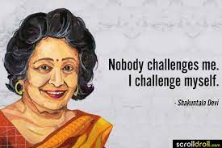

Females Page.

Shakuntala Devi (4 November 1929 – 21 April 2013) was an Indian mental calculator and writer, popularly known as the "Human Computer". Her talent earned her a place in the 1982 edition of The Guinness Book of World Records. However, the certificate for the record was given posthumously on 30 July 2020,
despite Devi achieving her world record on 18 June 1980 at Imperial College, London. Devi was a precocious child and she demonstrated her arithmetic abilities at the University of Mysore without any formal education.
Devi strove to simplify numerical calculations for students.[1] She wrote a number of books in her later years, including novels as well as texts about mathematics,
puzzles, and astrology. She wrote the book The World of Homosexuals, which is considered the first study of homosexuality in India.[2][3] She saw homosexuality
in a positive light and is considered a pioneer in the field.[2]
Back to about page